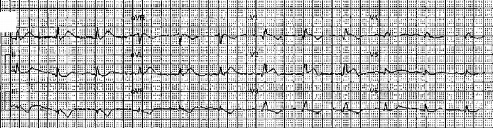
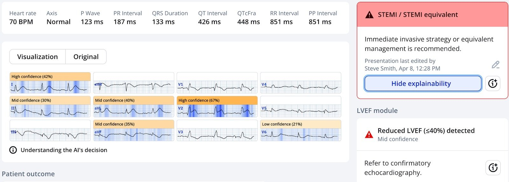
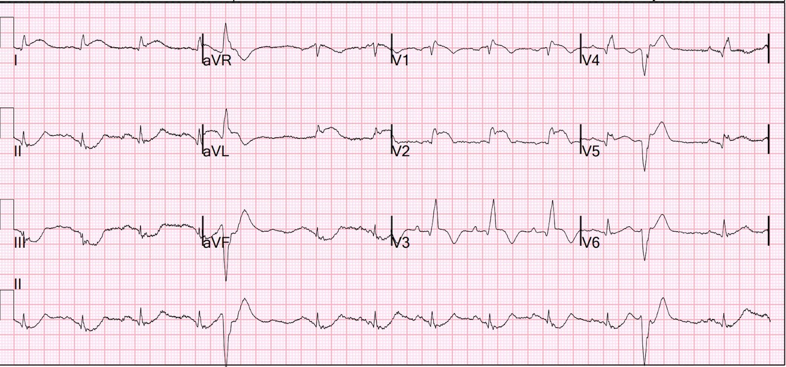
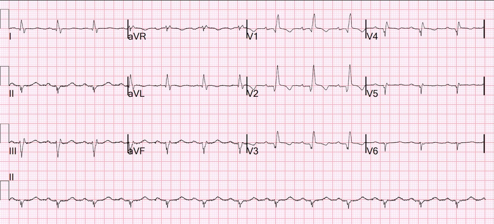
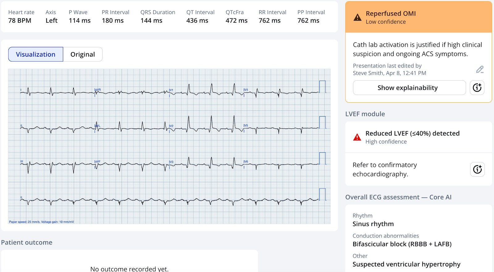
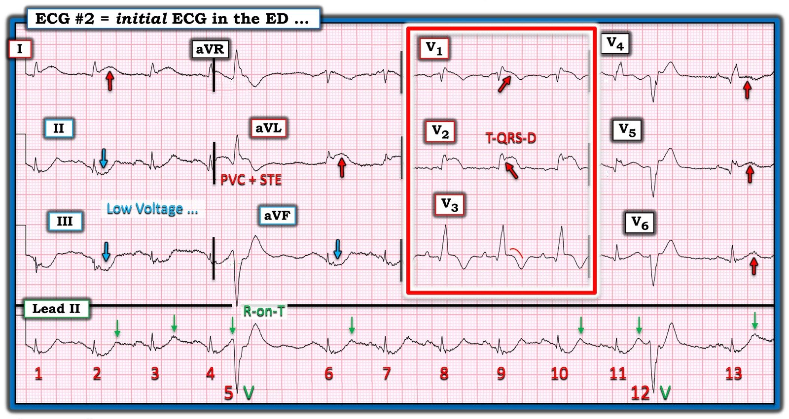

09/04/2025 — OMI thành trước kèm RBBB bị rung thất 3 lần: làm sao ngăn các cơn rung thất tiếp theo?
Bản dịch tiếng Việt của bài "Anterior OMI with RBBB has VF x 3: how to prevent further episodes of VF?" – Dr. Smith’s ECG Blog. Giữ nguyên toàn bộ 7 hình ảnh của bản gốc.
Một phụ nữ trung niên không có tiền sử bệnh tim gọi 911 vì đau ngực.
Thêm ca bệnh nhân 28 tuổi có RBBB và OMI thành trước từ slide 78 của bài PowerPoint nội dung cốt lõi về nhịp nhanh QRS rộng. Bệnh nhân 28 tuổi, đau ngực 8 giờ.
5372839, 7-22-2017
Đây là điện tâm đồ trước viện của bà:


Bạn nghĩ gì?
Có nhịp xoang kèm RBBB và OMI LAD rõ ràng (tắc LAD đoạn gần): sóng T tối cấp ở I, aVL và ST chênh lên (STE) tối thiểu ở V1, V2.
Hình ảnh này có giá trị chẩn đoán OMI LAD cấp
Nếu bạn đang thắc mắc Queen nghĩ gì, đây là kết quả của cô ấy:


Lưu ý rằng cô ấy còn chẩn đoán phân suất tống máu thấp.
Chẩn đoán của nhân viên cấp cứu ngoài viện là “Có thể STEMI trước bên.” Tôi không biết thuật toán của máy đọc ra kết quả gì.
Tôi không chắc đã có kích hoạt phòng thông tim (cath lab) từ trước viện hay chưa, nhưng lẽ ra phải có.
Khi đến khoa cấp cứu (ED), siêu âm tại giường cho thấy chức năng thất trái kém (đúng như Queen of Hearts dự đoán) với đường B lan tỏa.
Huyết áp ban đầu 120/96, nhịp tim 102, SpO2 98%. và bản ghi này được ghi lại:


RBBB kèm tắc LAD đoạn gần có nguy cơ rất cao.
Khi bản ghi này vừa ra khỏi máy, tôi quay sang bác sĩ nội trú phụ trách và thì thầm “Ca này rất tệ.”
3 giây sau, bà rơi vào rung thất (VF).
Chúng tôi nhanh chóng khử rung cho bà, và nhịp xoang bình thường trở lại.
Vài phút sau bệnh nhân lại rung thất > khử rung 200J, trở về nhịp xoang bình thường (NSR).
Đặt nội khí quản nhanh (rapid sequence intubation) được tiến hành để bảo vệ đường thở trong bối cảnh rung thất tái phát và nhiều lần khử rung.
X-quang ngực cũng cho thấy phù phổi.
Sau đó bệnh nhân có thêm 2 cơn rung thất phải khử rung, rồi trở về NSR.
Bà được cho 2 mg magnesi. Kali là 4.5 mEq/L
Trong khi chờ kíp thông tim, và để phòng các cơn VF tiếp theo, lidocaine 100 mg được tiêm, sau đó 50 mg mỗi 5 phút x 3 lần (tổng cộng 250 mg trong 15 phút), tiếp theo là truyền lidocaine 3 mg/phút
Liều lidocaine: Lidocaine phân bố lại nhanh từ khoang ngoại bào vào khoang nội bào. Nồng độ ngoại bào (huyết thanh) cao thì gây độc. Phải tiêm thành nhiều liều bolus nối tiếp để thuốc có thời gian phân bố lại. Vì vậy chúng tôi đã cho 1.5 mg/kg, tiếp theo 0.75, rồi 0.75, rồi 0,75, cách nhau 5 phút. Hơn nữa, thuốc được chuyển hóa nhanh, do đó cần truyền liên tục để duy trì nồng độ điều trị thích hợp.
Bệnh nhân được chuyển tới phòng thông tim cùng bác sĩ nội trú; huyết áp 50/30 trên đường đi đã cải thiện với một liều bơm nhanh (push dose) 100 mcg epinephrine.
Bà không có thêm cơn VF nào nữa.
Chụp mạch vành:
2. LAD: mạch típ III-IV với tắc do huyết khối hoặc thuyên tắc ở đoạn gần
(dòng chảy TIMI 0). Kết quả chụp mạch cuối cùng rất tốt.
Troponin
Troponin ban đầu là 24 ng/L (chỉ vừa vượt giới hạn trên tham chiếu (URL)). Thêm một bằng chứng rằng một STEMI rất lớn có thể có troponin ban đầu bình thường hoặc gần bình thường. Chúng tôi đã chứng minh điều này trong bài báo này trên JAMA Cardiology.
Troponin đỉnh lớn hơn 60,000 ng/L — quá cao để đo được.
Siêu âm tim 9 tháng sau:
Buồng thất trái giãn (LVEDD 6.2 cm) với chức năng tâm thu giảm vừa. Buồng thất trái nhìn bằng mắt có vẻ tái cấu trúc dạng hình cầu. Phân suất tống máu thất trái ước tính là 32%. Vô động thành trước từ đoạn giữa đến đoạn xa và các thành trước mỏm, bên mỏm, dưới mỏm và vách mỏm.
Điện tâm đồ nhiều tháng sau:


RBBB với sóng Q hình thành rõ ở V1-V6, cả ở I, aVL. Nhồi máu cũ trước bên rất lớn.
Mặc dù được tái tưới máu nhanh, vẫn có rất nhiều tổn thương cơ tim.
Giờ đây, nhiều tháng sau, Queen chẩn đoán đúng OMI đã tái tưới máu và EF thấp (và dĩ nhiên cả RBBB và LAFB)


Vì sao tôi dùng lidocaine?
Xem tài liệu tham khảo bên dưới. Lidocaine có hiệu quả ngăn ngừa ngay cả cơn VF đầu tiên trong nhồi máu cơ tim cấp. Tuy vậy, tôi không dùng cho tất cả bệnh nhân. Tôi dùng khi đã có một hoặc nhiều cơn VF. Tại sao không dùng amiodarone? 1) theo những gì tôi biết, có rất ít dữ liệu về amiodarone cho chỉ định này 2) amiodarone có tác dụng chẹn beta, điều này có thể gây hại ở bệnh nhân nhồi máu thành trước diện rộng kèm phù phổi và có nguy cơ sốc tim (và bà ấy đã thực sự rơi vào sốc.
Lidocaine không có tác dụng giảm co bóp (inotrope âm) hay giảm tần số tim (chronotrope âm).
_________________
Lidocaine để phòng ngừa các cơn rung thất tiếp theo.
TÀI LIỆU THAM KHẢO
Prevention of primary ventricular fibrillation in acute myocardial infarction with prophylactic lidocaine (Phòng ngừa rung thất nguyên phát trong nhồi máu cơ tim cấp bằng lidocaine dự phòng)
https://www.sciencedirect.com/science/article/abs/pii/S0002914904007799 (bài báo về phòng ngừa rung thất nguyên phát bằng lidocaine dự phòng trên ScienceDirect)
Rung thất (VF) nguyên phát trong nhồi máu cơ tim cấp (AMI) xảy ra với tỷ lệ mắc và
tỷ lệ tử vong cao, dù có hay không có tiêu sợi huyết. Tỷ lệ mắc dao động từ 2% đến 19% tùy theo định nghĩa “nguyên phát.” VF nguyên phát trong nghiên cứu này là
rung thất xảy ra khi không có sốc hay phù phổi. Tỷ lệ tử vong khi có VF nguyên phát
cao gấp 2 đến 4 lần so với khi không có.
Lidocaine đã được dùng để phòng ngừa VF từ thập niên 1960, sau khi
các đơn vị chăm sóc mạch vành (CCU) trở thành môi trường chuẩn để điều trị AMI.7
Bình luận của Smith: Vâng, tin hay không thì tùy, khi tôi mới vào nghề giữa thập niên 1980, mọi bệnh nhân nhồi máu cơ tim cấp đều được truyền lidocaine! Tôi sẽ không bao giờ quên lần tôi chỉ định truyền như vậy vào năm 1991, rồi bệnh nhân của tôi bắt đầu co giật, tôi ngước lên thì thấy điều dưỡng đã mở khóa dịch truyền lidocaine hết cỡ!
Tuy nhiên, hướng dẫn năm 1996 của Hội Tim Hoa Kỳ và
Trường Môn Tim Hoa Kỳ (AHA/ACC) về điều trị AMI
đã xếp lidocaine dự phòng vào chỉ định nhóm III.8
Khuyến cáo này dựa trên 4 phân tích gộp đưa ra giả thuyết rằng
tỷ lệ tử vong tăng ở bệnh nhân dùng lidocaine là
do vô tâm thu hoặc blốc nhĩ thất hay blốc xoang nhĩ, mặc dù
không có dữ liệu chứng minh.
Việc phòng ngừa
VF đã bị cản trở bởi việc công bố khuyến cáo năm 1996
của Hội Tim Hoa Kỳ
và Trường Môn Tim Hoa Kỳ phản đối việc dùng
lidocaine dự phòng, dựa trên các nghiên cứu phân tích gộp
ngụ ý độc tính. Nghiên cứu quan sát này trên 4,254 bệnh nhân AMI báo cáo tỷ lệ mắc và tỷ lệ tử vong
của VF nguyên phát trong 32 năm. Trong 4,254 bệnh nhân,
4,150 người được dùng lidocaine dự phòng, và 104 bệnh nhân
không được dùng lidocaine dự phòng do hướng dẫn năm 1996,
sau thời điểm đó việc dùng lidocaine dự phòng
tùy theo lựa chọn của bác sĩ. Tỷ lệ mắc VF nguyên phát là 0.5% trong 4,150 người
được dùng lidocaine dự phòng và 10% trong 104 người
không được dùng do lựa chọn của bác sĩ (p <0.0001).
Sau năm 1996, 104 bệnh nhân không được dùng lidocaine dự phòng theo quyết định của bác sĩ điều trị sau khi hướng dẫn AHA/ACC năm 1996 được công bố.8 Trong giai đoạn 6 năm này, 798 bệnh nhân AMI được điều trị, 13% trong số đó không được dùng lidocaine dự phòng.
Trong 4,150 người được dùng
lidocaine dự phòng, blốc xoang nhĩ xảy ra ở 0.5%
và blốc nhĩ thất hoàn toàn dưới nút xảy ra ở 0.2%, tất cả đều thứ phát do vị trí nhồi máu
(nồng độ lidocaine huyết thanh đồng thời là <4g/ml).
Vô tâm thu là nhịp hấp hối (agonal) ở 4%; những bệnh nhân này
đã ngưng lidocaine được 48 giờ. Tỷ lệ tử vong là
10.5% ở bệnh nhân không có VF nguyên phát và 25% ở bệnh nhân có VF (p <0.001). Như vậy, lidocaine dự phòng
đã làm giảm rõ rệt tỷ lệ mắc VF ở 4,150 bệnh nhân AMI xuống 0.5% so với các thử nghiệm trước và
sau thời kỳ tiêu sợi huyết (2% đến 19%) và so với 104 bệnh nhân trong nghiên cứu này không được dùng lidocaine
dự phòng (10%). Không
Lidocaine được tiêm bolus 75 mg trong khoảng 90 giây, tiếp theo
là truyền liên tục 2 mg/phút. Liều bolus thứ hai 50 mg được tiêm sau 5
phút. Ngừng truyền sau 24 giờ nếu không
ghi nhận nhát ngoại vị thất. Nếu xảy ra rối loạn nhịp thất
bùng phát (breakthrough), tiêm thêm các liều bolus 50 mg mỗi 5
phút, khi cần, tối đa 325 mg.
Bàn luận
Năm
kết luận được rút ra từ kết quả của nghiên cứu này và các nghiên cứu khác:
(1) tỷ lệ mắc VF nguyên phát trước và trong kỷ nguyên tiêu sợi huyết
không thay đổi và vẫn còn quá cao; (2) VF nguyên phát
không thể dự đoán; (3) khi VF nguyên phát xảy ra, nó báo trước kết cục xấu về
tỷ lệ bệnh tật và tử vong; (4) lidocaine có hiệu quả phòng ngừa
VF nguyên phát; và (5) lidocaine không liên quan đến tăng
tỷ lệ rối loạn dẫn truyền khi được dùng đúng cách.
__________________________
Một nghiên cứu khác ít liên quan hơn
Đây là một nghiên cứu gần đây đã loại trừ những bệnh nhân chỉ được dùng thuốc chống loạn nhịp sau khi tái lập tuần hoàn tự nhiên (ROSC), nên mức độ liên quan kém hơn nhiều. Nhưng nó cho thấy mối liên quan mạnh giữa kết cục tốt hơn với lidocaine so với amiodarone.
Smida T và cs. A retrospective ‘target trial emulation’ comparing amiodarone and lidocaine for adult out-of-hospital cardiac arrest resuscitation (Mô phỏng thử nghiệm mục tiêu hồi cứu so sánh amiodarone và lidocaine trong hồi sức ngừng tim ngoài bệnh viện ở người lớn). DOI: 10.1016/j.resuscitation.2025.110515
https://pubmed.ncbi.nlm.nih.gov/39863130/ (tóm tắt bài báo trên PubMed)
Tóm tắt
Mục tiêu: Việc dùng amiodarone hoặc lidocaine được khuyến cáo trong hồi sức bệnh nhân ngừng tim ngoài bệnh viện (OHCA) biểu hiện rung thất hoặc nhịp nhanh thất kháng khử rung hoặc tái phát. Mục tiêu của chúng tôi là sử dụng phương pháp ‘mô phỏng thử nghiệm mục tiêu’ (target trial emulation) để so sánh kết cục của bệnh nhân được dùng amiodarone hoặc lidocaine trong hồi sức.
Phương pháp: Bệnh nhân OHCA người lớn, không do chấn thương, trong bộ dữ liệu ESO Data Collaborative 2018-2023, bị OHCA trước khi đội cấp cứu ngoài viện (EMS) đến, biểu hiện nhịp có thể sốc điện, và được dùng amiodarone hoặc lidocaine trong hồi sức, được đánh giá để đưa vào nghiên cứu. Chúng tôi sử dụng ghép cặp điểm xu hướng (PSM) để khảo sát mối liên quan giữa thuốc chống loạn nhịp và kết cục. Tái lập tuần hoàn tự nhiên (ROSC) là kết cục chính. Kết cục phụ gồm số lần khử rung sau khi dùng thuốc và sống sót đến khi xuất viện.
Kết quả: Sau khi áp dụng tiêu chí loại trừ, 23,263 bệnh nhân từ 1,707 đơn vị EMS đủ điều kiện phân tích. Trước PSM, 6,010/20,284 (29.6%) bệnh nhân dùng amiodarone và 1,071/2,979 (35.9%) bệnh nhân dùng lidocaine đạt ROSC trước viện. Sau PSM, dùng lidocaine liên quan với odds ROSC trước viện cao hơn (36.0 so với 30.4%; aOR: 1.29 [1.16, 1.44], n = 2,976 cặp ghép). Dùng lidocaine cũng liên quan với số lần khử rung sau dùng thuốc ít hơn (trung vị: 2 [0-4] so với 2 [0-6], trung bình: 3.3 so với 3.9, p < 0.01, n = 2,976 cặp), và odds sống sót đến xuất viện cao hơn (35.1 so với 25.7%; OR: 1.54 [1.19, 2.00], n = 538 cặp).
Kết luận: ‘Mô phỏng thử nghiệm mục tiêu’ của chúng tôi gợi ý rằng lidocaine liên quan với odds ROSC trước viện cao hơn so với amiodarone khi được dùng trong hồi sức rung thất/nhịp nhanh thất (VF/VT) kháng sốc điện hoặc tái phát.

===================================
BÌNH LUẬN CỦA TÔI, bởi KEN GRAUER, MD (4/9/2025):
===================================
Bác sĩ Smith đã nhận xét sâu sắc khi nhìn thấy điện tâm đồ đầu tiên tại ED trong ca hôm nay, “Ca này rất tệ …”. Tôi tập trung bình luận của mình vào việc giải thích thêm vì sao lại như vậy.
- Để rõ ràng, trong Hình 1 — tôi đã sao lại và đánh dấu điện tâm đồ đầu tiên tại ED này.
Các dấu hiệu trên điện tâm đồ đầu tiên tại ED:
Điểm khác biệt chính giữa điện tâm đồ trước viện (trình bày ở trên trong phần bàn luận của Bác sĩ Smith) — và điện tâm đồ đầu tiên tại ED này trong Hình 1 — là sự hiện diện của 2 PVC trên dải nhịp chuyển đạo dài.
- Thú nhận: Tôi vẫn còn bối rối với y văn tôi đã đọc về việc liệu (và nếu có thì tăng bao nhiêu) nguy cơ có tăng lên do hiện tượng R trên T (R-on-T) (tức là, khi sóng R của một PVC rơi vào cái gọi là “thời kỳ dễ tổn thương” — tương ứng với phần đi lên của sóng T đứng trước) hay không. Được ghi nhận lần đầu cách đây gần 100 năm — ngày nay chúng ta nhận thấy rằng mặc dù PVC R trên T không phải là hiện tượng thường gặp — sự xuất hiện của nó đã được chứng minh là đi trước VT/rung thất (VFib) trong nhiều tình huống khác nhau, bao gồm tắc mạch vành cấp.
- Để rõ ràng — tôi đã đánh dấu đỉnh sóng T bằng các mũi tên MÀU XANH LÁ cho một số nhát dẫn truyền từ xoang trên dải nhịp chuyển đạo II dài của Hình 1. Lưu ý rằng PVC thứ 1 trên dải nhịp này rõ ràng rơi vào đỉnh của sóng T đứng trước ( = hiện tượng R trên T), do đó làm tăng nguy cơ tiềm tàng khởi phát VT/VFib ở bệnh nhân hôm nay (Ngược lại — PVC thứ 2 = nhát #11, xảy ra muộn hơn trong chu kỳ, và không phải là R trên T).
Có điện thế thấp:
Như trong Bình luận của tôi ở bài đăng ngày 13 tháng Mười Hai năm 2023 — việc nhận ra điện thế thấp (hoặc chỉ khu trú ở chuyển đạo chi — hoặc ở cả chuyển đạo chi và chuyển đạo trước tim) — nên gợi ý cân nhắc một chẩn đoán phân biệt.
- Mặc dù có RBBB — điện tâm đồ đầu tiên tại ED hôm nay rõ ràng cho thấy biên độ QRS giảm ở từng chuyển đạo chi (tức là, <5 mm ở cả 6 chuyển đạo chi) — cũng như điện thế thấp ở tất cả chuyển đạo trước tim trừ chuyển đạo V3.
- Trong số các nguyên nhân gây điện thế thấp mà tôi liệt kê trong bài đăng ngày 13 tháng Mười Hai năm 2023 này có choáng cơ tim (myocardial stunning) = sự suy giảm rõ rệt thoáng qua sức co bóp của tim, xảy ra để đáp ứng với một tổn thương cấp tính lớn như ngừng tim, sau một rối loạn nhịp nhanh kéo dài — hoặc một nhồi máu cơ tim cấp diện rộng.
Tắc LAD cấp:
Như Bác sĩ Smith đã nêu — các bản ghi ban đầu của bệnh nhân có giá trị chẩn đoán OMI LAD cấp.
- Ngoài nhịp xoang với 2 PVC mà chúng ta thấy trên điện tâm đồ #2 — còn có RBBB (dưới dạng rSR’ hoặc QR ở chuyển đạo V1 — với QRS chủ yếu dương tiếp tục ở các chuyển đạo V2,V3).
- Mặc dù khó xác định có sóng Q hay sóng r khởi đầu ở chuyển đạo V1 — một sóng q nhỏ chắc chắn thấy ở chuyển đạo V2, với sóng Q nhồi máu tiếp tục ở các chuyển đạo trước tim còn lại. Sóng q nhỏ có lẽ cũng hiện diện ở các chuyển đạo I,II,aVL.
- Xét đến kích thước nhỏ của các phức bộ QRS — có ST chênh lên rõ rệt ở các chuyển đạo I,aVL; và ở các chuyển đạo V1,V2 — với ST dạng vòm (coving) ở chuyển đạo V3 — và ST chênh lên và/hoặc sóng T tối cấp ở V4,V5,V6. (Hãy nhớ rằng sóng ST-T ở các chuyển đạo trước tim phải V1,V2 lẽ ra phải âm khi có RBBB — nhưng thay vào đó sóng ST-T lại chênh lên rõ rệt ở các chuyển đạo này).
- Có ST chênh xuống soi gương rõ rệt ở từng chuyển đạo dưới.
2 dấu hiệu điện tâm đồ thú vị khác:
- T-QRS-D (biến dạng phần cuối QRS — Terminal QRS Distortion) thấy ở chuyển đạo V2 (để xem minh họa T-QRS-D — Xem Bình luận của tôi trong bài đăng ngày 14 tháng Mười Một năm 2019).
- Cuối cùng — điện tâm đồ #2 là một ví dụ hay cho thấy PVC đôi khi có thể biểu hiện ST chênh lên (thấy ở chuyển đạo aVL ở nhát #5) có giá trị chẩn đoán. Đây là một ĐIỂM THEN CHỐT (PEARL) hữu ích cần biết — vì đôi khi, các thay đổi sóng ST-T cấp của nhồi máu cơ tim cấp có thể chỉ thấy ở các PVC, và không thấy ở phần còn lại của bản ghi (Xem Bình luận của tôi trong bài đăng ngày 8 tháng Mười năm 2018).
Nhận định: Tổng hợp các quan sát trên — các dấu hiệu điện tâm đồ gợi ý nguy cơ cao hơn trên bản ghi đầu tiên tại ED này gồm:
- Hiện tượng R trên T (ở nhát #4).
- Điện thế thấp lan tỏa, mà trong bối cảnh lâm sàng này gợi ý choáng cơ tim.
- Một điện tâm đồ ban đầu có RBBB và bất thường sóng ST-T ở hầu như cả 12 chuyển đạo, trong đó có ST chênh lên rõ rệt và ST chênh xuống soi gương — và trong đó sóng Q nhồi máu đã xuất hiện ở ít nhất 8 chuyển đạo. Gộp lại, các dấu hiệu này gợi ý một STEMI trước-bên diện rộng đang diễn ra.


===========================
Suy ngẫm về Lidocaine:
Một trong những công trình học thuật đầu tiên của tôi là một bản thảo trong đó tôi đặt câu hỏi lâm sàng, “Có nên dùng Lidocaine dự phòng thường quy ở bệnh nhân nghi nhồi máu cơ tim cấp không?” (J Fla Med Assoc 69:377-379, 1982).
- Đó là thời điểm trước khi thuốc tiêu sợi huyết được sử dụng đầy đủ tại bệnh viện nơi chúng tôi nhận bệnh. Nhờ vậy — tôi đã được tận mắt chứng kiến tỷ lệ rung thất nguyên phát dường như giảm mạnh tại ICU của chúng tôi nhờ thực hành mới vào thời điểm đó là dùng Lidocaine dự phòng cho bệnh nhân nhồi máu cơ tim cấp.
- Sau này tôi được theo dõi sự thay đổi trong cách dùng Lidocaine qua bộ sách ACLS mà tôi viết — trong đó tôi dành trọn một chương về dược động học của Lidocaine ở lần xuất bản thứ 1 (1984) — và tiếp tục nhấn mạnh thuốc này trong vài lần xuất bản kế tiếp, cho đến khi có sự chuyển dần sang ưu tiên Amiodarone tĩnh mạch — đến mức ở lần xuất bản cuối cùng tôi viết (năm 2013), Lidocaine về cơ bản bị đẩy xuống làm thuốc hàng thứ 3 cho VT/VFib.
- Xin nhấn mạnh: Ngay cả khi Hướng dẫn ACLS đã được áp dụng rộng rãi trong những năm trước đây — thực hành lâm sàng về sử dụng thuốc chống loạn nhịp trong cấp cứu vẫn có sự khác biệt, tùy theo kinh nghiệm và thói quen của bác sĩ, cũng như cách dùng theo từng vùng. Thêm vào đó là thực tế lâm sàng đáng suy ngẫm về việc khó khăn đến mức nào để có được dữ liệu khách quan, có đối chứng, tiến cứu trong tình huống cấp cứu ngừng tim và rối loạn nhịp đe dọa tính mạng.
Dù vậy — ca hôm nay như Bác sĩ Smith mô tả minh họa việc dùng các liều bolus Lidocaine tĩnh mạch rất hiệu quả, tiếp theo là truyền Lidocaine tĩnh mạch, đã ngăn chặn thành công điều mà nếu không có lẽ đã tiến triển thành rung thất kháng trị.